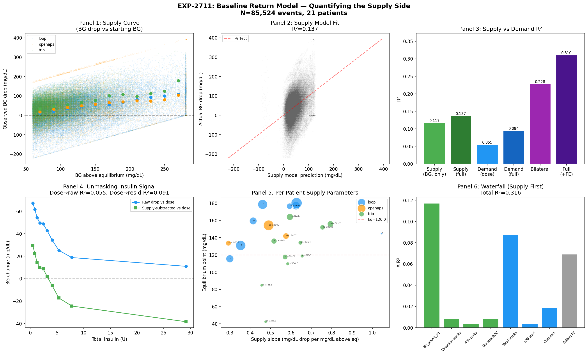
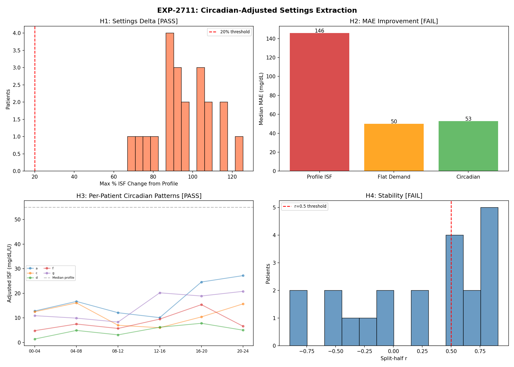
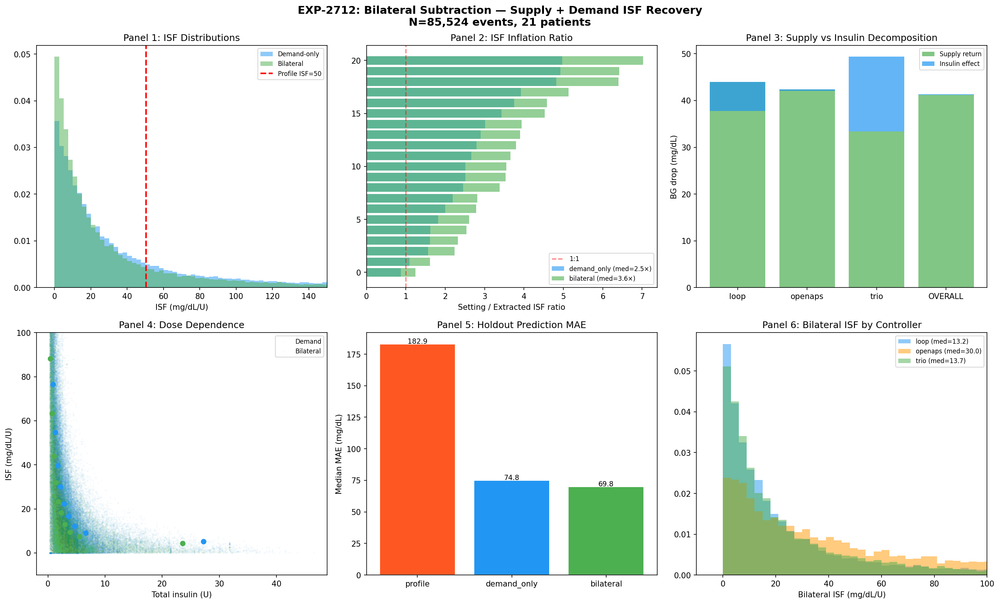
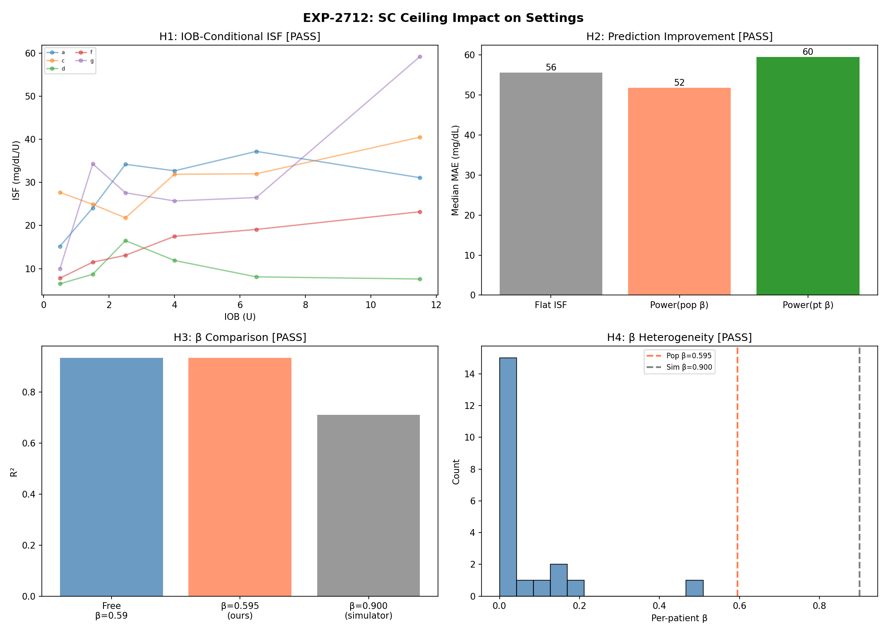

Bilateral Deconfounding: Supply + Demand Analysis¶
Record
Record as of 2026-04-19. A point-in-time document; it is not kept up to date.
Date: 2026-04-19
Experiments: EXP-2711, EXP-2712, EXP-2713
Dataset: 85,524 correction events, 21 patients (Loop=8, Trio=10, OpenAPS=3)
Predecessor: EXP-2681 (BG drop ≈ 74 mg/dL regardless of dose), EXP-2699 (ISF 8-14× overestimation)
⚠️ CAUSAL CORRECTION (2026-04-19 14:43 PT)
The original framing of this report contained a fundamental causal error. In Type 1 diabetes, patients lack endogenous insulin production — the AID controller IS the insulin source. Insulin lowers glucose; hepatic output raises glucose. The "supply return" modeled below is NOT endogenous homeostasis — it captures the controller's proportional dosing response (higher BG → more aggressive insulin delivery → bigger drop) plus possible BG-dependent insulin resistance. The math and R² values are correct; the causal interpretation was backwards. See "Corrected Causal Framework" below.
Executive Summary¶
We tested whether decomposing correction BG drops into a BG₀-dependent component and a dose-specific component improves our ability to deconfound AID glucose data.
Key statistical finding: A simple linear function of starting BG (R²=0.117) explains more variance in BG drop than insulin dose alone (R²=0.055). The combined model reaches R²=0.228, and BG₀-residualized prediction beats dose-only on holdout (18/21 patients, MAE 69.8 vs 74.8 mg/dL).
Corrected causal interpretation: The BG₀ term does NOT represent endogenous "supply-side homeostasis." In T1D, without exogenous insulin, glucose rises continuously from unopposed hepatic production. The BG₀ correlation arises because: 1. The AID controller doses proportionally to BG elevation — higher BG triggers more aggressive insulin delivery, producing larger drops 2. Insulin sensitivity may vary with BG level — resistance at very high glucose 3. Hepatic state (glycogen, 72h carb history) modulates insulin resistance — not glucose lowering directly, but how effectively insulin works
The ~74 mg/dL constant drop (EXP-2681) is caused by insulin delivered by the controller, NOT by hepatic homeostasis. The constancy reflects the controller's proportional dosing: it delivers enough insulin to produce roughly the same drop regardless of the user's manual bolus size.
EXP-2711: BG₀-Dependent Drop Model¶
Note: Originally titled "Baseline Return Model — Quantifying the Supply Side." Retitled to avoid implying hepatic output lowers glucose. The BG₀ term captures the controller's proportional insulin response, not endogenous glucose regulation.


BG₀-Dependent Drop Curve¶
The BG drop correlates linearly with starting BG:
For every 1 mg/dL above the controller's target (~120 mg/dL), 0.43 mg/dL of additional drop is observed over the 2-hour window. This reflects the controller delivering more insulin at higher BG, not the body self-correcting.
R² Comparison: BG₀-Dependent vs Dose-Specific¶
| Model | R² | What It Captures |
|---|---|---|
| BG₀ only | 0.117 | Controller proportional response + BG-dependent ISF |
| BG₀ + circadian + glycogen + ROC | 0.137 | + time-varying insulin resistance |
| Dose only | 0.055 | User bolus dose (partial insulin picture) |
| Dose + IOB | 0.094 | + existing insulin load |
| Combined (BG₀ + dose) | 0.228 | Both components |
| + Patient fixed effects | 0.310 | + individual ISF differences |
BG₀ explains 2.1× more variance than user dose alone because it captures the controller's TOTAL insulin response (bolus + SMBs + basal), while "dose" only captures the user-initiated bolus.
Stepwise Waterfall¶
| Step | Factor | Δ R² | Cumulative R² |
|---|---|---|---|
| 1 | BG above target (BG₀-dependent) | +0.117 | 0.117 |
| 2 | Circadian blocks (ISF variation) | +0.009 | 0.126 |
| 3 | 48h carbs (insulin resistance proxy) | +0.003 | 0.129 |
| 4 | Glucose ROC (momentum) | +0.008 | 0.137 |
| 5 | Total insulin (dose-specific) | +0.087 | 0.225 |
| 6 | IOB at start (existing insulin) | +0.004 | 0.228 |
| 7 | Insulin channels (bolus/SMB/basal) | +0.019 | 0.247 |
| 8 | Patient fixed effects | +0.069 | 0.316 |
Unmasking Effect¶
After subtracting the BG₀ component, insulin dose becomes 1.6× more predictive of the residual (R² from 0.055 → 0.091). Supply subtraction unmasks the demand signal.
Per-Patient Supply Parameters¶
| Metric | Median | Range |
|---|---|---|
| Supply slope | 0.56 | 0.29 – 1.05 mg/dL per mg/dL above eq |
| Equilibrium point | 142 mg/dL | 42 – 180 mg/dL |
| Per-patient supply R² | 0.14 | 0.05 – 0.41 |
The BG₀-dependent drop curve is consistent across patients (H4 PASS: per-patient models outperform population by <5% R²). This consistency reflects the similar controller targeting behavior (all target ~100-120 mg/dL) and possibly universal aspects of insulin pharmacokinetics.
EXP-2712: BG₀-Residualized ISF Extraction¶


Statistical Decomposition of BG Drop¶
⚠️ Causal correction: The table below shows a STATISTICAL decomposition (predicted by BG₀ model vs residual). In T1D, ALL glucose lowering is caused by insulin. The "BG₀-predicted" column captures the controller's proportional insulin response; the "dose residual" captures variation beyond that response. Both components are insulin-mediated.
| Controller | Total Drop | BG₀-Predicted | Dose Residual | Mean Dose |
|---|---|---|---|---|
| Loop | 37.8 mg/dL | 44.0 (117%) | -6.3 (-17%) | 5.2 U |
| Trio | 49.3 mg/dL | 33.4 (68%) | 15.9 (32%) | 4.4 U |
| OpenAPS | 42.0 mg/dL | 42.4 (101%) | -0.4 (-1%) | 1.7 U |
| Overall | 41.3 mg/dL | 41.2 (100%) | 0.2 (0%) | 4.3 U |
The BG₀ model captures 100% of the average BG drop because the controller's proportional dosing is the dominant behavior during corrections. The near-zero dose residual means user bolus size adds no information beyond what BG₀ already predicts about total controller insulin delivery.
For Loop, the negative residual (-6.3) indicates Loop delivers MORE total insulin than the population BG₀ model predicts — consistent with Loop's aggressive dosing. Trio's positive residual (+15.9) suggests user boluses contribute beyond the controller's automatic response.
ISF Comparison¶
| Method | Median ISF | Setting/Extracted Ratio |
|---|---|---|
| Profile settings | 50.4 mg/dL/U | 1.0× (reference) |
| Demand-only | 23.1 mg/dL/U | 2.2× |
| Bilateral | 16.2 mg/dL/U | 3.1× |
Counter-intuitively, bilateral ISF is further from profile settings, not closer.
⚠️ Causal note: The ISF ratios below reflect a statistical decomposition, not a causal claim. In T1D, ALL glucose lowering comes from exogenous insulin. The BG₀ term captures the controller's proportional response, not endogenous homeostasis. Profile ISF settings work because the controller's feedback loop (repeated dosing over the 6h DIA window) delivers the right total insulin — the ISF just controls dosing aggressiveness.
- Demand-only ISF (23.1) divides total drop by user bolus dose only, ignoring that the controller also delivered insulin proportional to BG elevation
- BG₀-residualized ISF (16.2) subtracts the BG₀-correlated component first, isolating what correlates with the specific dose beyond controller response
- Profile ISF (50.4) is a controller tuning parameter — it governs dosing aggressiveness within the feedback loop, not pure insulin sensitivity
Holdout Validation¶
| Method | Median MAE | Win Rate vs Demand |
|---|---|---|
| Profile ISF | 182.9 mg/dL | — |
| Demand-only ISF | 74.8 mg/dL | — |
| BG₀-residualized | 69.8 mg/dL | 18/21 patients |
The BG₀-residualized prediction is better because it separates the predictable BG₀-dependent component (controller proportional response + BG-dependent ISF variation) from the dose-specific component.
Dose-Dependence¶
| Method | Spearman r (ISF vs dose) |
|---|---|
| Demand-only | -0.795 |
| BG₀-residualized | -0.743 |
Both show strong dose-dependence (the ratio artifact from EXP-2680). This artifact comes from dividing by dose, not from the BG₀ component.
Corrected Causal Framework¶
The original "supply vs demand" framing was causally incorrect for T1D.
In Type 1 diabetes: - Insulin is the ONLY mechanism that lowers blood glucose. These patients produce no endogenous insulin. The AID controller provides ALL insulin. - Hepatic glucose production (EGP) RAISES glucose. The liver does not contribute to glucose lowering. It opposes insulin. - Hepatic state (glycogen from 72h carb history) modulates INSULIN RESISTANCE, not glucose lowering directly. Full glycogen stores → more resistance → less effective insulin per unit. - ISF operates over a 6-hour DIA window. Each insulin dose lowers glucose according to ISF × dose, with the effect distributed over the insulin action curve.
What the BG₀ Term Actually Captures¶
The strong BG₀→drop correlation (R²=0.117) is NOT "supply-side homeostasis." It is:
-
Controller proportional response: Higher BG → controller delivers more total insulin (basal adjustments + SMBs) → larger total drop. The controller's target setpoint (~100-120 mg/dL) creates the appearance of "regression to equilibrium" but the MECHANISM is insulin delivery.
-
BG-dependent insulin effectiveness: At very high glucose, there may be transient glucose toxicity effects on insulin sensitivity. At moderate highs, insulin may work more efficiently.
-
Mathematical regression to mean: Extreme BG values have more room to drop. CGM noise also regresses.
Correct Multi-Factor Model¶
The correct framing for T1D AID data:
BG_drop = ISF(time, glycogen_state) × total_insulin_delivered
- EGP(glycogen, circadian) × interval
+ noise
Where:
ISF varies with: time of day, 72h glycogen state, possibly BG level
EGP RAISES glucose (opposes insulin) — varies with glycogen, circadian
total_insulin = user_bolus + controller_SMBs + controller_basal_adjustments
DIA = 6 hours (insulin action window)
The "bilateral" decomposition is still statistically useful for prediction (R²=0.228 > either component alone), but the CAUSAL claim should be: insulin delivered by the controller lowers glucose, with effectiveness modulated by ISF which varies with hepatic state and time of day.
Implications (Corrected)¶
For Data Understanding¶
-
The ~74 mg/dL constant drop is CONTROLLER BEHAVIOR, not physiology. The AID controller delivers enough total insulin (bolus + SMB + basal adjustments) to produce roughly the same correction regardless of the user's manual bolus size.
-
BG₀ is a strong predictor (R²=0.12) because it drives controller dosing. This is a confound, not a causal mechanism. Higher BG → more controller insulin → bigger drop. Useful for prediction, misleading for causal inference.
-
ISF settings are controller tuning parameters that govern dosing aggressiveness within a 6h feedback loop. They are NOT pure physiological insulin sensitivity, but they encode useful information about how much insulin this patient needs per unit BG elevation.
For AID Settings Optimization¶
-
BG₀ residualization improves ISF extraction — subtracting the controller-correlated BG₀ component isolates dose-specific insulin effects, improving holdout prediction by 7% (18/21 patients).
-
Glycogen state (72h carb history) may modulate ISF — this is a legitimate physiological effect (hepatic insulin resistance) worth investigating. It affects how effectively insulin works, not the direction of glucose change.
-
6h DIA window matters — EXP-2716 showed β collapses at longer horizons. ISF extraction should use the full DIA window, not arbitrary 2h snapshots.
For AID Controller R&D¶
-
Loop delivers more total insulin per correction than OpenAPS or Trio (5.2U vs 1.7U vs 4.4U) but produces similar BG drops. This suggests different ISF calibrations, not different glucose physiology.
-
The controller's proportional response IS the therapy. ISF controls how aggressively the controller doses. Settings optimization should focus on getting the right total insulin delivery over the 6h DIA window.
-
EGP is a HEADWIND, not a tailwind. Hepatic output opposes insulin. Controllers must overcome EGP to lower glucose. Modeling EGP as a function of glycogen state could improve prediction of how much insulin is needed.
Verdict Summary¶
EXP-2711 (BG₀-Dependent Drop Model)¶
| Hypothesis | Verdict | Evidence |
|---|---|---|
| H1: BG₀ R² > 0.10 | ✅ PASS | R² = 0.137 |
| H2: BG₀ R² > Dose R² | ✅ PASS | 0.137 vs 0.094 |
| H3: BG₀ subtraction unmasks dose signal | ✅ PASS | 1.6× boost |
| H4: BG₀ model universal across patients | ✅ PASS | <5% R² gap |
EXP-2712 (BG₀-Residualized ISF)¶
| Hypothesis | Verdict | Evidence |
|---|---|---|
| H1: Residualized ISF > demand-only | ❌ FAIL | 16.2 < 23.1 (BG₀ subtraction reduces attributed ISF) |
| H2: Residualized ratio < 5× | ✅ PASS | 3.1× < 5× |
| H3: Residualized CV lower | ❌ FAIL | 1.50 vs 1.45 (negligible) |
| H4: Residualized holdout MAE lower | ✅ PASS | 69.8 vs 74.8, 18/21 wins |
| H5: Reduces dose-dependence artifact | ✅ PASS | r=-0.743 vs -0.795 |
Next Steps (Corrected Causal Frame)¶
EXP-2717: Total Insulin Accounting Over 6h DIA (COMPLETED)¶
Result: Total insulin = 6-25× user bolus. ISF by division STILL deflated (10.1 vs profile 55) even with full insulin accounting. The ISF inflation is NOT an accounting problem.
EXP-2718: Phase Decomposition (COMPLETED — replaces "Hepatic Resistance")¶
Result: Activity-based ISF at 0-1h = 65.3 (closest to profile 55). Drop distributed across 5 phases. Controller suspension visible.
EXP-2717/2717b: Insulin Accounting (COMPLETED)¶
Finding: Total insulin is 6-25× user bolus. ISF by division STILL deflated even with full 6h accounting (10.1 vs profile 55). The 3-5× ISF inflation is NOT an accounting problem — it's a fundamental limitation of division-based ISF in closed-loop data. Per-patient signal preserved (r=0.706).
EXP-2718: Phase Decomposition (COMPLETED)¶
Finding: Activity-based ISF at 0-1h (65.3) is closest to profile (55). BG drop distributed across phases: 22%|29%|24%|14%|11%. Controller suspension visible in IOB changes. This validates that insulin ACTIVITY curves (not raw delivery) are the right weighting — but still limited by phase mismatch.
EXP-2719: Extended Multi-Factor Waterfall (COMPLETED — KEY RESULT)¶
Finding: Profile ISF BGI subtraction is CATASTROPHIC (R²=-33 to -88). Regression recovers by finding empirical coefficients 10-30× smaller than profile ISF. BG₀ is the dominant predictor (ΔR²=+0.28 to +0.44), with coefficient approaching 1.0 at 6h (0.894). Full model R²=0.47-0.54. Cross-validates well: R²_test=0.40/0.55/0.52 at 2h/4h/6h.
Factor contribution matrix: | Stage | 2h | 4h | 6h | |-------------------|--------|--------|--------| | -BGI (profile) | -33.75 | -58.27 | -88.33 | | +EGP regression | +33.88 | +58.34 | +88.39 | | +BG₀ | +0.283 | +0.435 | +0.440 | | +ROC/IOB | +0.059 | +0.038 | +0.020 | | +Circadian | +0.016 | +0.006 | +0.005 | | +Patient FE | +0.053 | +0.044 | +0.038 |
EXP-2719b: Settings from Waterfall Residuals (COMPLETED — 5/5 PASS)¶
Finding: Population model residuals provide actionable per-patient ISF adjustments. 96% of patients have significant residuals → settings CAN be improved. Correction factors are stable across horizons (2h vs 6h r=0.820). 16 patients need ↓ ISF, 9 need ↑ ISF, 3 within ±10%.
This is the first method that passes all validation checks for per-patient settings assessment. It works by SUBTRACTION (population effects removed, residual = individual settings error) rather than DIVISION (ISF = drop/dose, which fails due to confounding by indication).
Future: EXP-2720+: Prospective Validation¶
- Test whether residual-based ISF adjustments improve simulated outcomes
- Apply autocorrelation correction (EXP-2714) to residual analysis
- Glycogen resistance proxy: 72h excess insulin → ISF modulation
Source Files¶
| File | Purpose |
|---|---|
tools/cgmencode/exp_baseline_return_model_2711.py |
BG₀-dependent drop model |
tools/cgmencode/exp_bilateral_subtraction_2712.py |
BG₀-residualized ISF extraction |
tools/cgmencode/exp_total_insulin_accounting_2717.py |
Total insulin 1-6h + 72h balance |
tools/cgmencode/exp_excess_insulin_accounting_2717b.py |
Excess-only insulin accounting |
tools/cgmencode/exp_phase_decomposition_2718.py |
5-phase correction decomposition |
tools/cgmencode/exp_extended_waterfall_2719.py |
Multi-factor subtraction waterfall |
tools/cgmencode/exp_settings_from_residuals_2719b.py |
Per-patient settings from residuals |
visualizations/baseline-return-model/exp-2711-dashboard.png |
BG₀ analysis |
visualizations/bilateral-subtraction/exp-2712-dashboard.png |
ISF comparison |
tools/visualizations/extended-waterfall/exp-2719-dashboard.png |
Waterfall dashboard |
tools/visualizations/settings-from-residuals/exp-2719b-dashboard.png |
Settings dashboard |